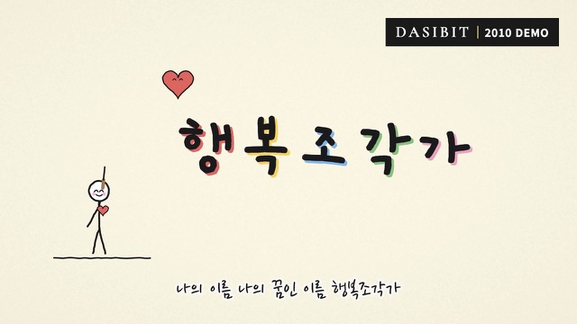
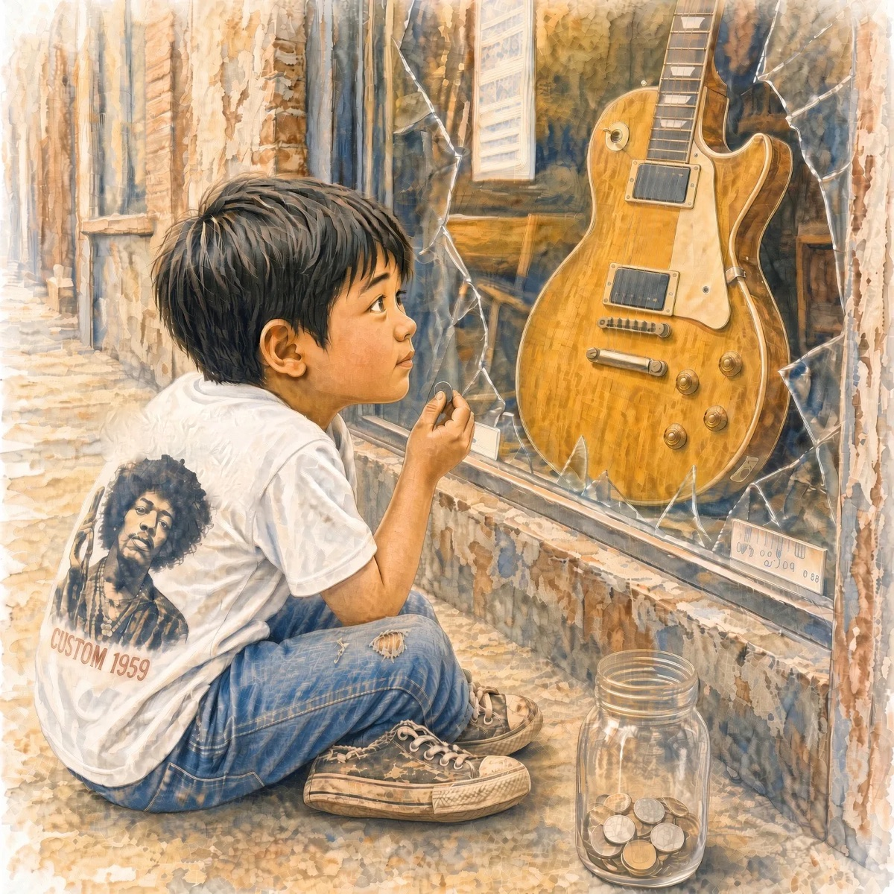

No. 01

2010년과 2011년, 내 방에서 혼자 만든 노래들. 삶을 따라 떠나느라 mp3로만 남겨 두었던 그 시절의 소리를 15년 만에 다시 찾았습니다.
다시빛(Dasibit)은 그 노래들에 다시 빛을 비추는 프로젝트입니다. 그때의 목소리, 그때의 기타, 그때의 마음을 고치지 않고 그대로 들려드립니다.
Songs that stop don't disappear. They wait.
작은 방에서, 간단한 장비로 녹음했습니다.
2010–2011년에 만들고 멈춰 있던 노래들을 뮤직비디오로 다시 살려냅니다.
지금의 목소리와 지금의 마음으로 만드는 새 노래들.
No. 01
No. 02
좋아하는 가수들의 노래를 나의 목소리와 기타로 다시 부릅니다.
No. 01
No. 02
뮤직비디오는 YouTube에서, 작업하는 일상은 X와 Instagram에서 전합니다.